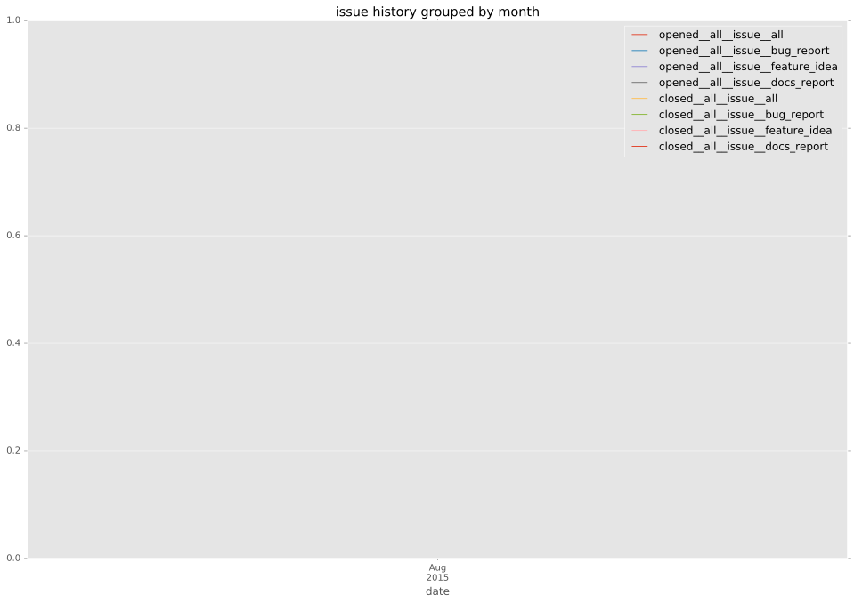
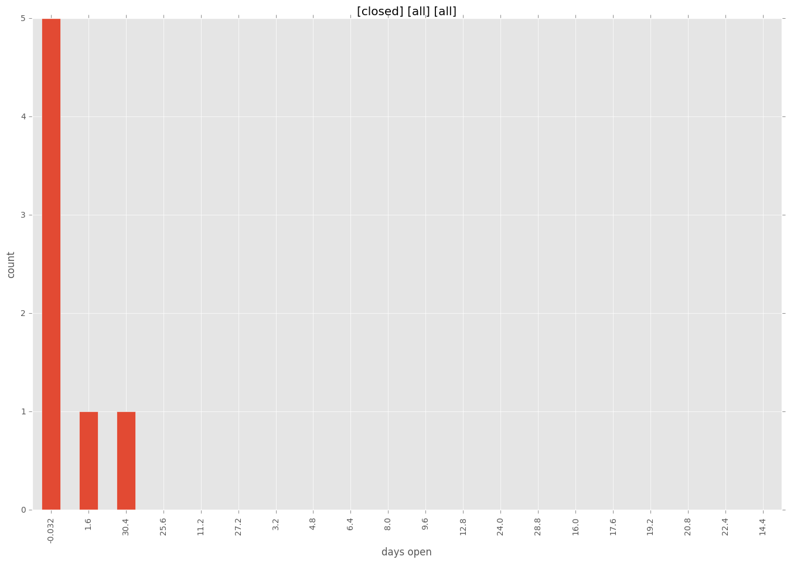
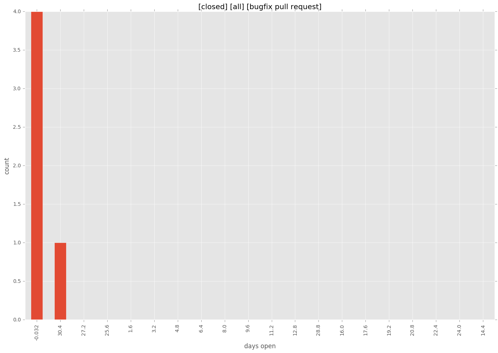
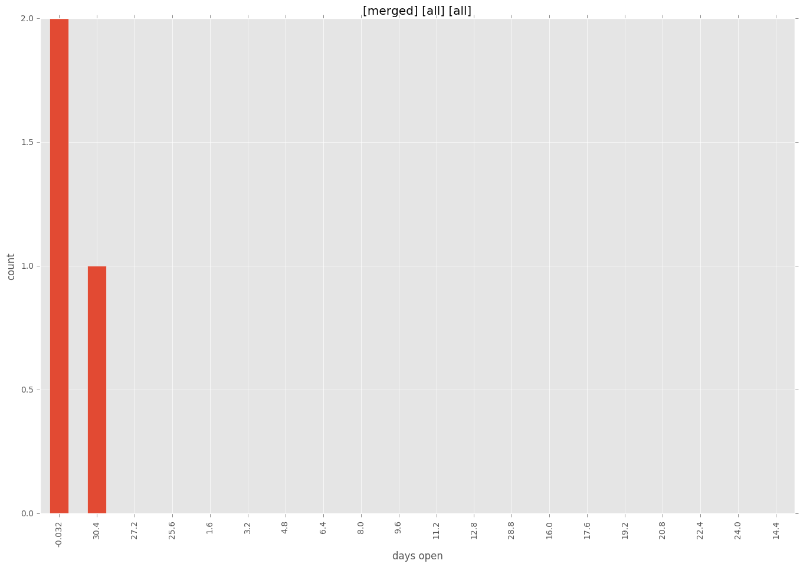
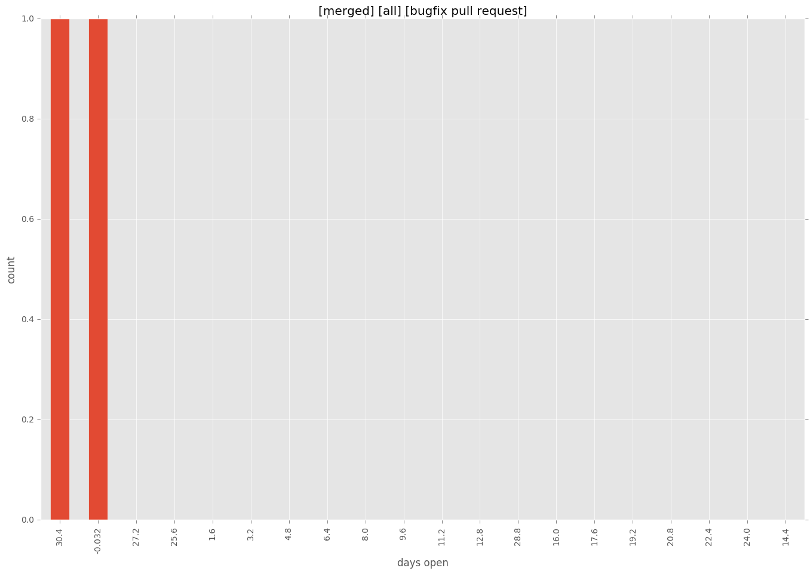
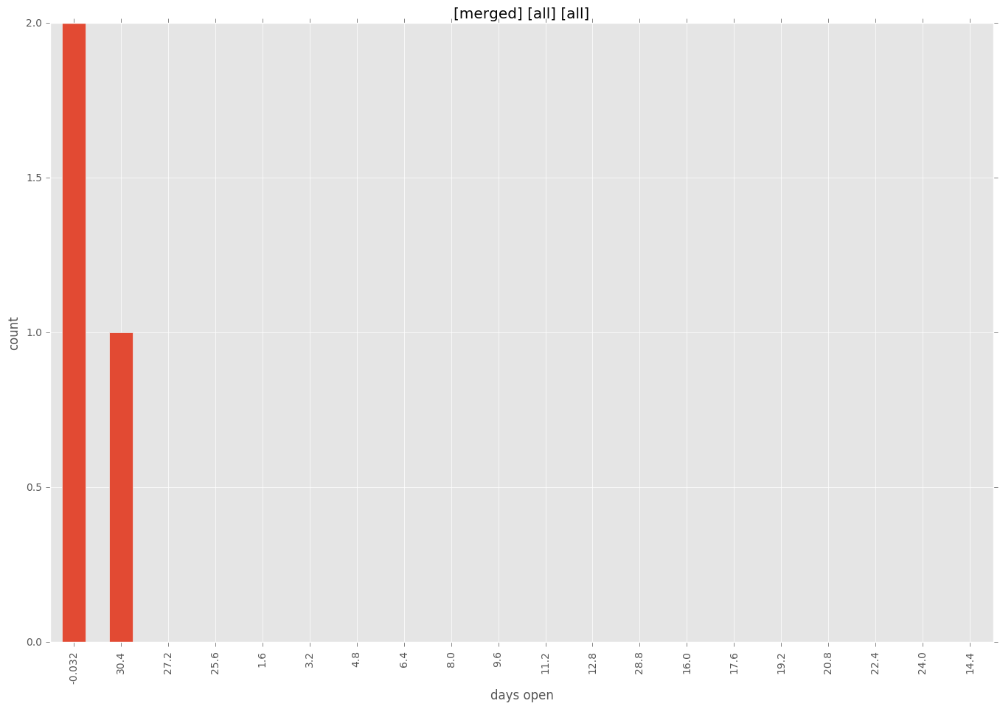
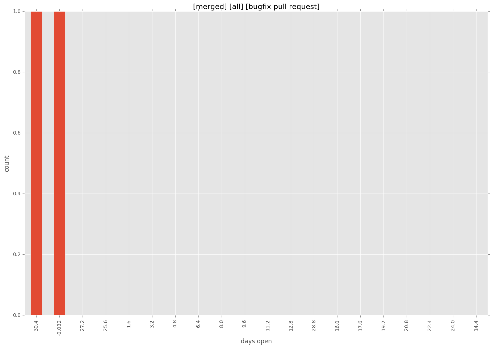

total issue counts
bugfix pull request: 5
feature pull request: 2
docs report: 1
pullrequest: 7
issue: 1
issue history

days open by issue type
feature pull request
count: 3
std: 1.15470053838
min: 0
max: 2
median: 0.0
mean: 0.666666666667
all
count: 10
std: 13.3504057367
min: 0
max: 32
median: 0.0
mean: 6.7
pullrequest
count: 0
std: nan
min: nan
max: nan
median: nan
mean: nan
docs report
count: 0
std: nan
min: nan
max: nan
median: nan
mean: nan
bugfix pull request
count: 7
std: 15.5211069806
min: 0
max: 32
median: 0.0
mean: 9.28571428571
issue
count: 0
std: nan
min: nan
max: nan
median: nan
mean: nan
closures grouped by total days open




 


